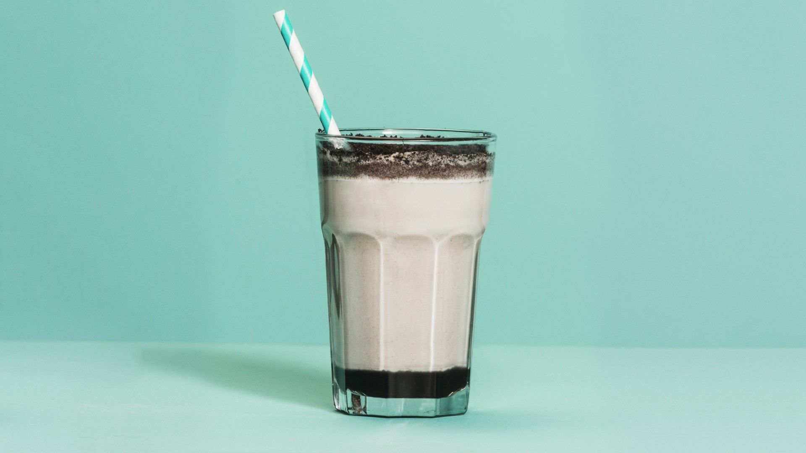

Las recetas de mi abuela
CheeseCake
Batido de oreo
Postres:
CheeseCake
Ingredientes:
Para 4 personas:
1 paquete de galletas tipo digestive
100 gramos de mantequilla
1 cucharadita de esencia de vainilla
500 gramos de queso philadelphia o similar
100 gramos de azúcar blanca
500 ml de nata para montar (35% materia grasa)
2 sobres de cuajada
1 sobre de gelatina en polvo
1 bote de mermelada de fresa o frambuesa
Preparación:
Lo primero que haremos será coger las galletas y las trituraremos hasta hacerlas polvo. Yo he usado el triturador de la batidora pero podéis meterla en una bolsa y con la ayuda de un rodillo las dejaremos trituradas.
Derretimos la mantequilla en el microondas y mezclamos las galletas trituradas con la mantequilla y un toque de esencia de vainilla.
Ponemos en un molde el fondo de papel vegetal y hacemos la base de la tarta. Con la ayuda de un espalmador o con la mano presionamos bien. Metemos en la nevera durante 15 o 20 minutos.
En una cacerola ponemos la nata a cocer junto con el queso philadelphia, los sobres de cuajada y el azúcar. Dejamos cocer a fuego lento 1 minuto para que la cuajada actúe. Si no cocemos puede que la cuajada no funcione. Una vez que está todo el queso derretido y mezclado con los demás ingredientes, lo vertemos encima de la base de galletas. Introducimos en la nevera mínimo 4 horas.
Pasado ese tiempo ponemos en una cacerola la mermelada de fresa con un chorrito de agua y el sobre de gelatina. Cocemos a fuego lento un minuto y retiramos. Dejamos enfriar un poco (con cuidado de que no se cuaje la mezcla) una vez templado y que continúe líquido lo vertemos encima de la base de queso y volvemos a introducir en la nevera durante un par de horas. Lo dejo enfriar un poco porque una vez lo puse directamente de la cacerola y se derritió por completo la base de queso jeje. Así que esperad unos minutos.

Batido de oreo.
Ingredientes:
800 g de patatas
140 g de harina de garbanzo (1 y 1/2 tazas)
360 ml de agua (1 y 1/2 tazas)
1 cebolla
aceite de oliva virgen extra
sal
Preparación:
Comenzamos la receta llenando el fondo de los vasos con sirope de chocolate.
Para hacer este shake mezclamos el helado de vainilla, la leche y las Oreo y batimos hasta que la mezcla quede homogénea.
Vertemos la mezcla en el vaso en el que previamente añadimos el sirope de chocolate.
Finalmente añadimos como topping las Oreo desechas.